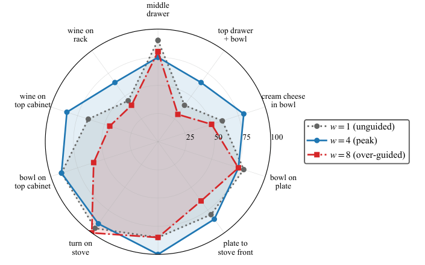
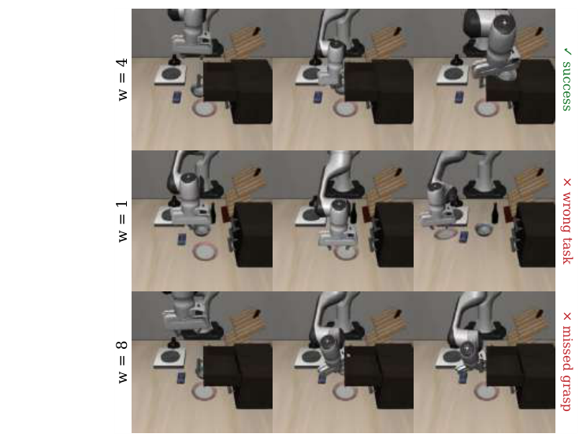
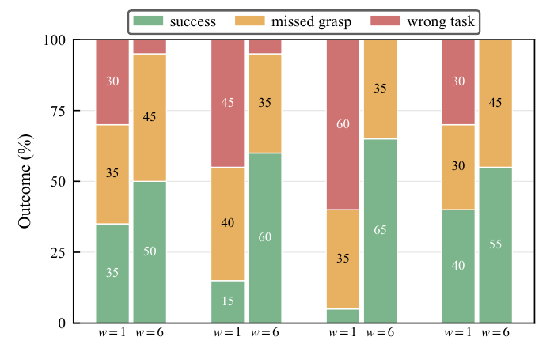
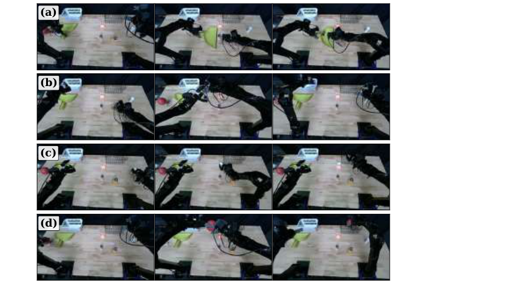
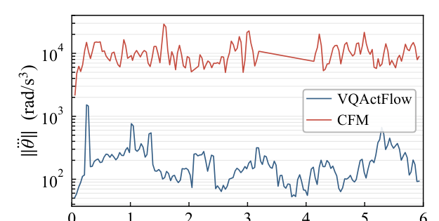

Explicit action-mode commitment for multi-task policies
Multi-task robot manipulation policies are challenging to learn from demonstration because a single network must select among qualitatively different action modes from a multimodal demonstration distribution, conditioned on language and visual context. A wrong mode selection means executing the wrong task or an action infeasible in the scene. Tokenizing continuous actions into a learned discrete codebook separates these modes at the representation level, offering structural advantages for multi-task learning.
We propose VQActFlow, a multi-task manipulation policy that tokenizes action chunks and generates code sequences via Variational Flow Matching. VQActFlow maintains an explicit preference over action modes throughout generation. Inference-time guidance acts on this preference to steer mode commitment. We instantiate this with classifier-free guidance over language conditioning, which steers the policy toward the instructed action mode, and a learned codebook critic that supplies a complementary feasibility signal.
We evaluate VQActFlow on three platforms: the LIBERO simulation benchmarks, a Unitree G1 humanoid performing whole-body pick-and-place, and an ALOHA-style bimanual platform performing contact-rich tasks. Across these benchmarks, VQActFlow outperforms both continuous and discrete baselines.
Tokenize actions, generate with Variational Flow Matching, steer at inference

Diffusion and flow matching policies have become the prevailing paradigm for visuomotor manipulation, and classifier-free guidance (CFG) is the standard tool for biasing them at inference. These policies generate in a continuous action or latent space where action modes are not explicitly represented, so guidance reshapes a single continuous distribution rather than selecting among discrete action modes. Vector-quantized codebooks instead learn a finite vocabulary of action primitives whose discrete bottleneck separates modes explicitly — exactly the structure the multi-task setting requires. The closest prior work, Discrete Policy, tokenizes actions with a VQ-VAE but generates codes by diffusion in continuous space, recovering discrete indices by nearest-neighbor lookup only at the end of sampling, abandoning the discrete structure during generation.
VQActFlow instead makes action-mode commitment explicit throughout generation. An action chunk is first tokenized by a frozen VQ-VAE into a short sequence of indices into a learned codebook of action primitives. A Diffusion-Transformer policy then generates this code sequence via Variational Flow Matching (VFM): it transports Gaussian noise toward codebook embeddings, but is trained with a cross-entropy loss over ground-truth code indices rather than an L2 regression toward embeddings. This means the network produces logits over the full codebook at every integration step — a categorical posterior that is carried within a continuous transport, rather than recovered only at the end.
That categorical posterior is a single, unified interface for inference-time guidance. We instantiate it with two complementary mechanisms:
-
1
Classifier-free guidance on language conditioning. The conditional and unconditional logits are linearly extrapolated at every step, sharpening the policy's commitment to the language-instructed action mode and correcting wrong-task errors under ambiguous observations.
-
2
A contrastively-trained codebook critic. A small transformer scores the feasibility of a code distribution given the scene and language, trained with an InfoNCE objective against negatives that violate temporal coherence, code distribution, observation grounding, and language grounding. Its gradient nudges the policy's categorical distribution toward feasible modes, with guidance strength scheduled by the entropy of the current distribution — weak while the distribution is still diffuse, strong once it has crystallized.
Because both mechanisms act on the same categorical preference rather than on decoded actions or a continuous velocity field, their contributions accumulate at each integration step and can be combined without retraining the policy.
What this paper adds
-
1
VQActFlow, a multi-task manipulation policy that generates action tokens via Variational Flow Matching, maintaining an explicit preference over action modes throughout generation.
-
2
Guidance through this categorical interface effectively steers action-mode selection at inference time; we introduce a novel contrastively-trained codebook critic that supplies a feasibility signal, operating on its own or alongside CFG.
-
3
Evaluation on the LIBERO benchmarks and on bimanual and humanoid hardware, demonstrating improved performance over both continuous and discrete baselines.
LIBERO simulation, a G1 humanoid, and an ALOHA-style bimanual platform
VQActFlow uses a flat VQ-VAE codebook of size K=512, a 12-layer DiT policy backbone (dmodel=1024, 8 heads), and a 3-layer codebook critic, with a frozen CLIP-B/32 text encoder and shared ResNet-18 visual encoder. All baselines are trained under matched protocol — identical encoders, data, steps, and seeds.
CFG evaluation on LIBERO-Goal
Does guidance through the categorical interface beat guidance through a continuous proxy?



Multi-task scaling on LIBERO-90
CFG and the codebook critic provide complementary, largely non-redundant gains at scale.
| Method | Type | CFG w | Critic λ | Success |
|---|---|---|---|---|
| MT-ACT | Continuous | – | – | 72.4 |
| CFM | Continuous | – | – | 77.2 |
| VQ-BeT | VQ-based | – | – | 24.1 |
| Discrete Policy | VQ-based | 1.0 | – | 49.4 |
| Discrete Policy | VQ-based | 2.0 | – | 60.3 |
| VQActFlow | VQ-based | 1.0 | 0.0 | 72.3 |
| VQActFlow | VQ-based | 1.0 | 1.0 | 74.3 |
| VQActFlow | VQ-based | 2.0 | 0.0 | 77.6 |
| VQActFlow | VQ-based | 2.0 | 1.0 | 80.5 |
| Codebook size | 128 | 256 | 512 | 1024 |
|---|---|---|---|---|
| Success rate | 62.6 | 65.6 | 72.3 | 70.1 |
Success peaks at K=512: smaller codebooks limit vocabulary granularity, larger ones enlarge the per-position classification space and make the categorical prediction harder to learn.
Humanoid whole-body manipulation
A Unitree G1 with two Inspire dexterous hands, four shared-workspace pick-and-place tasks that differ only in target object and instruction.

| CFG weight | Success | Missed grasp | Wrong task |
|---|---|---|---|
| w=1 | 23.8 | 35.0 | 41.3 |
| w=6 | 57.5 | 40.0 | 2.5 |

Bimanual manipulation
Two ALOHA-style arms on four contact-rich tasks, three requiring coordinated bimanual use.


| Method | Battery | Duck | Cylinder | Ball | Avg. |
|---|---|---|---|---|---|
| Discrete Policy, w=1.0 | 35.0 | 70.0 | 15.0 | 75.0 | 48.8 |
| Discrete Policy, w=4.0 | 65.0 | 70.0 | 35.0 | 75.0 | 61.3 |
| VQActFlow, w=1.0, λ=0.0 | 40.0 | 70.0 | 15.0 | 55.0 | 45.0 |
| VQActFlow, w=1.0, λ=1.0 | 50.0 | 75.0 | 50.0 | 65.0 | 60.0 |
| VQActFlow, w=4.0, λ=0.0 | 70.0 | 85.0 | 55.0 | 85.0 | 73.8 |
| VQActFlow, w=4.0, λ=1.0 | 70.0 | 90.0 | 65.0 | 85.0 | 77.5 |
A continuous flow-matching (CFM) baseline with the identical DiT backbone converges in training but fails all four tasks at evaluation. Rollout inspection reveals severe high-frequency oscillation in the commanded joint trajectories — peak joint jerk on the order of 104 rad/s3, roughly two orders of magnitude worse than VQActFlow's ~2×102 rad/s3. We attribute this to the VQ-VAE decoder mapping code sequences into action chunks through a learned compositional vocabulary that encodes inter-code dependencies including trajectory smoothness — a structural advantage continuous flow matching at the same backbone capacity does not have.

| Configuration | Unguided | CFG | Critic | CFG + critic |
|---|---|---|---|---|
| Inference time | 155.2 | 288.9 | 216.7 | 350.2 |
At 350 ms, the full configuration completes well within the 1.28 s spanned by each action chunk; asynchronous inference computes the next chunk during execution, leaving margin for action-chunk smoothing without bottlenecking execution.
A categorical interface for inference-time guidance
VQActFlow demonstrates that maintaining an explicit preference over discrete action modes during generation provides a more effective interface for inference-time guidance than continuous-embedding alternatives. At matched training conditions, the same CFG mechanism produces larger gains, peaks at lower guidance weights, and reaches higher ceilings than baselines across LIBERO-Goal, LIBERO-90, and the G1 and bimanual tasks. The contrastively-trained codebook critic operates through the same interface and supplies a feasibility signal that CFG alone does not. VQActFlow deploys successfully on two distinct hardware platforms — a Unitree G1 humanoid and an ALOHA-style bimanual system — executing contact-rich tasks where continuous flow matching at matched capacity fails.
Two directions remain open: more expressive action tokenization schemes could relax the information-loss floor imposed by the VQ-VAE bottleneck while preserving the categorical interface, and VFM could serve as the action head of a VLA model, where the categorical output naturally interfaces with language-model token vocabularies.
BibTeX
@article{zhao2026vqactflow,
title = {VQActFlow: Vector-Quantized Action Mode Steering for Multi-Task Robot Manipulation},
author = {Zhao, Zhigen and Leggiero, Mark and Chen, Yipu and Liu, Haoran and Wu, Yifan and Xue, Huishu and Zhan, Sirui and Zhao, Ye},
institution = {Institute for Robotics and Intelligent Machines (IRIM), Georgia Institute of Technology},
year = {2026},
note = {Preprint}
}